Bến Tre với mệnh danh là vùng đất xứ dừa, nổi tiếng với những trái dừa mát lạnh, vườn trái cây trĩu quả, vùng sông nước đậm chất Nam Bộ. Du lịch Bến Tre thú vị thu hút nhiều du khách thăm quan, đây chắc chắn sẽ là một chuyến đi đầy ý nghĩa nếu bạn được đặt chân đến Bến Tre.
Bạn đang có dự định du lịch Bến Tre, bạn nên chuẩn bị kỹ lưỡng mọi hành trang, lịch trình đi lại, thăm quan, để chuyến đi của bạn được trọn vẹn. Dưới đây là những thông tin về kinh nghiệm du lịch Bến Tre tự túc cho quý khách, được cộng đồng phượt thủ tích luỹ được trong nhiều lần đến với xứ dừa.
I. Thời Điểm Du Lịch Bến Tre Lý Tưởng.
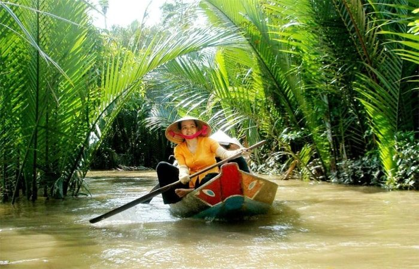
Là vùng đất có khí hậu nắng ấm quanh năm, thời tiết dễ chịu, vì vậy bạn có thể ghé Bến Tre bất cứ thời gian nào rảnh. Nói về thời điểm du lịch thì phần lớn du khách thường đi Bến Tre vào tháng 5 đến tháng 7 là đẹp nhất, lúc này hàng chục loại trái cây ngon ngọt chín trĩu cành như: măng cụt, sầu riêng, chôm chôm, mít, vú sữa, hồng siêm, táo, ổi… Bạn có thể cùng với những người thân yêu đến thăm quan, chụp hình và thưởng thức những trái cây tươi ngon ngay tại vườn đồng thời chiêm ngưỡng cảnh quang thiên nhiên đa màu sắc được hình thành từ nhiều lại cây trái, tiết trời tại Bến Tre.
II. Hướng Dẫn Đi Đến Bến Tre.
Nằm cách tp Hồ Chí Minh tầm 85km, để đi đến Bến Tre, bạn chỉ cần mất tầm 1,5 đến 2h. Bạn có thể đi bằng nhiều phương tiện khác nhau như xe khách hoặc xe máy, ô tô.
+ Xe Khách: Bạn có thể ghé bến xe miền Tây tại địa chỉ 395 Kinh Dương Vương, p An Lạc, quận Bình Tân, tp Hồ Chí Minh để mua vé một số hãng xe uy tín như: Phương Trang, Thành Bưởi, Thảo Châu hoặc Thịnh Phát, giá vé dao động từ 50k – 100k/lượt.
+ Xe máy hoặc ô tô:
Là phương tiện được nhiều bạn trẻ, phượt thủ sử dụng nhất vì tính tiện ích, tự chủ về thời gian, có thể dừng lại bất kỳ lúc nào để thưởng thức đặc sản Bến Tre, một số con đường đi qua. Bạn có thể đi theo cung đường sau để đến Bến Tre.
Khởi hành tại huyện Bình Chánh, tp Hồ Chí Minh – vào cầu vượt tại nút giao thông Bình Thuận – thẳng QL1A tầm 16km qua cầu Mỹ Yên, qua Vĩnh Lộc, và Bến Lức – chạy qua cầu Tân An – đến Tp Tân An (Long An) -đến tp Mỹ Tho – Theo QL 60 – cầu Rạch Miễu – chạy tiếp tầm 13km đến Bến Tre.
III. Khách Sạn Chất Lượng Cho Khách Du Lịch Bến Tre.
Là tỉnh có nhiều thắng cảnh đẹp, cùng những đặc sản phong phú, để có một chuyến thăm quan trọn vẹn, bạn nên tìm đến khách sạn, nhà nghỉ để nghỉ ngơi sau đó tiếp tục hành trình tiếp cận những địa danh du lịch. Theo kinh nghiệm của Du Lịch Việt, bạn nên tìm đến những khách sạn, nhà nghỉ chất lượng tại trung tâm thành phố hoặc gần khu du lịch để tiện cho việc thăm quan của mình. Dưới đây là một số khách sạn được giới du khách đánh giá cao, bạn có thể tham khảo.
1. Forever Green Resort
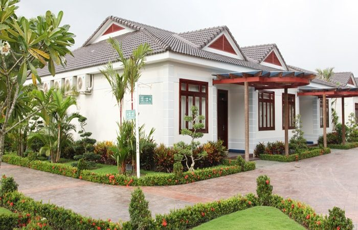
Là một khu nghỉ dưỡng nổi tiếng của xứ Dừa, toạ lạc tại âp Phú Khương, xã Phú Túc, huyện Châu Thành. Là một điểm dừng chân lý tưởng cho giới thượng lưu. Resort thiết kế theo chuẩn 4 sao, có một không gian rộng rãi, thoáng đãng, xung quanh là nhiều cây lá hoa, cỏ sắc, hồ bơi ngoài trời tuyệt đẹp.
Giá thuê phòng từ 2,3 tr vnđ/đêm, một ưu điểm của Resort này là giúp cho quý khách cảm nhận được sự gần gũi với thiên nhiên, có những giây phút thư thái về tâm hồn.
2. Mango Home Riverside
Là một resort chất lượng, với giá thành phải chăng chỉ tầm 550k/phòng/đêm. Nằm cách trung tâm thành phố Bến Tre tầm 10km toạ lạc Nghia Huan, Giong Trom, resort chuẩn 3 sao, có tầm nhìn đẹp về phía sông Bến Tre thơ mộng, thanh Bình, giúp cho du khách cảm thấy lòng nhẹ nhõm, bạn có thể dẫn người yêu cùng đến đây sẽ thích biết bao.
Resort tuy là tầm trung nhưng có đầy đủ tiện nghi, luôn làm hài lòng nhiều du khách, không gian trong xanh, thân thiện môi trường.
3. Jardin du Mekong Homestay
Là một địa điểm dừng chân lý tưởng, Homestay với khung cảnh yên bình, nằm ven sông Đốc, chợ Lách, thích hợp cho những du khách muốn hoà mình vào nhịp sống của người dân miền Tây sông nước.
Khi đến với Jardin du Mekong, bạn sẽ thấy sự hài hoà về màu sắc, khuôn viên, cây xanh, bài trí khiến cho nhiều người cảm thấy gần gũi như về với gia đình vậy. Giá thuê phòng tầm $61/phòng nhưng ở được 3, 4.
Bên cạnh đó, bạn có thể thuê một số khách sạn sau tại tp Bến Tre.
+ Khách sạn Hàm Luông tiêu chuẩn 3 sao, địa chỉ: 220C Hùng vuơng, Tp.Bến Tre.
+ Khách sạn Công Đoàn, toạ lạc địa chỉ: 6 Hai Bà Trưng, P.2, Tp Bến Tre
+ Khách sạn Phượng Hoàng toạ lạc địa chỉ : 28 Hai Bà Trưng, Tp Bến Tre
+ Khách sạn Oasis tại địa chỉ : 151 Xã Mỹ Thạnh An, Tp Bến Tre
+ Khách sạn Đông Nam Á, toạ lạc địa chi: Số 180A1, Đại lộ Đồng Khởi, Phường Phú Khương, tp Bến Tre.
IV. Phương Tiện Đi Lại Tại Bến Tre.
Là tỉnh có hạ tầng đang ngày một phát triển hiện đại, bạn có thể đi lại bằng nhiều phương tiện khác nhau như: xe máy, bạn có thể liên hệ với lễ tân khách sạn nơi mình cư trú để thuê xe máy, chỉ cần cnnd và bằng lái xe, giá thuê xe máy là từ 100k- 150k vnđ/ngày.
Thuê xe ô tô: giá tầm 800k-1tr500k/8h thích hợp với những khách đi đoàn, gia đình. Một số hãng xe có phụ thu nếu chạy quá số km quy định, bạn hãy cẩn thận nhé.
Taxi: Bạn có thể gọi taxi để đi lại theo nhóm từ 3,4 người trở lên sẽ tiết kiệm được khá chi phí. Một số hãng taxi Bến Tre uy tín bạn có thể liên hệ: taxi Mai Linh: 0275 387 8787, Taxi Đồng Khởi: 0275 381 8888, Happy Taxi: 0275 377 7777, Taxi Phú Cường: 0275 382 0197.
IV. Địa Điểm Du Lịch Bến Tre Không Thể Bỏ Qua.
Sau khi đã có nơi ở ổn định để nghỉ ngơi, dưỡng sức, bạn có thể an tâm hành trình khám phá vùng đất xứ dừa. Dưới đây là một số địa điểm du lịch hấp dẫn bạn không nên bỏ qua.
1. Cồn Quy.
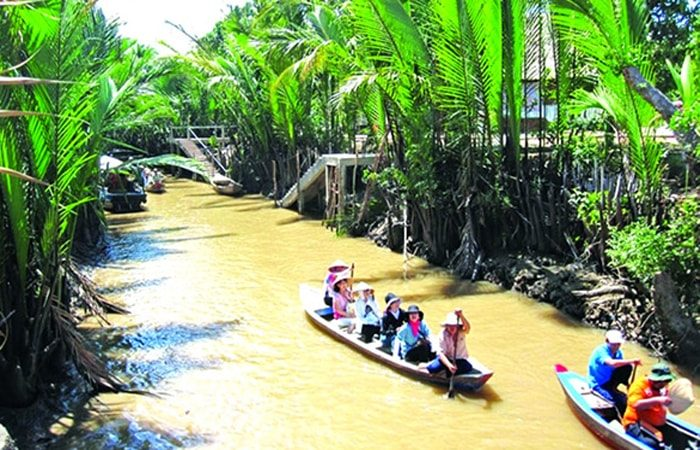
Là địa điểm du lịch nổi tiếng được giới du khách nghĩ đến đầu tiên khi nhắc đến du lịch Bến Tre. Nằm ở xã Tân Thạch và Quới Sơn, huyện Châu Thành, tỉnh Bến Tre. dọc theo nhánh sông Tiền, cách trung tâm tp Bến Tre 23km.
Sự cuốn hút du khách đến với Cồn Quy bởi nơi đây có một không gian thơ mộng, hữu tình, được nghe làn điệu dân ca đàn ca tài tử Nam bộ ngọt ngào. Cồn Quy còn mang nhiều dáng vẻ nguyên thuỷ, hoang sơ bởi chưa bị sự tác động nhiều từ bàn tay của con người và sự đô thị hoá, khí hậu nơi đây khá ôn hoà, dễ chịu.
Trong hành trình đến với Cồn Quy, bạn sẽ được thưởng thức trái cây ngon ngọt như cam, nhãn, bưởi,.. hít thở bầu không khí trong lành, sáng ngủ dậy được thưởng thức tách trà mật ong nóng hổi, được nghe làn điệu dân ca đờn ca tài tử, là một sản phẩm văn hoá phi vật thể được UNESCO công nhận.
Nhiều du khách cảm thấy thích thú khi được ngồi trên chiếc thuyền trôi theo dòng nước, ngắm nhìn cảnh sông nước miền Tây thanh bình và đây có lẽ hành trình đáng nhớ nhất trong chuyến đến với Bến Tre của du khách.
2. Cồn Phụng.
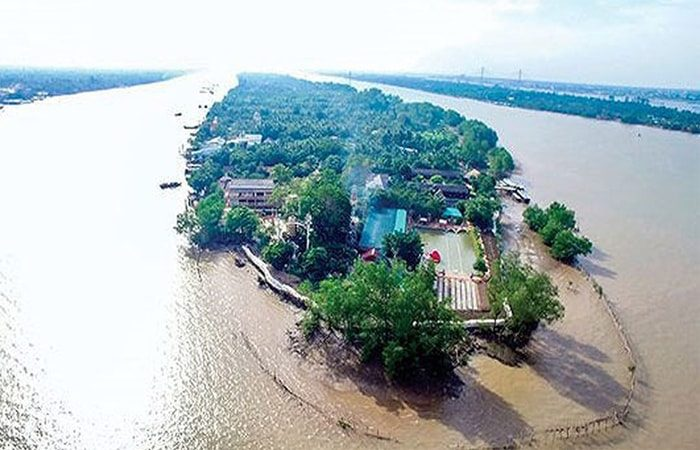
Là một trong những địa điểm du lịch tiêu biểu của Bến Tre nói riêng và đồng bằng sông Cửu Long nói chung. Khung cảnh thiên nhiên của Cồn Phụng hoang sơ, được ví như là một đảo xanh nằm giữa con sông Tiền, có không khí miệt vườn dân dã cuốn hút du khách muốn khám phá, trải nghiệm không khí tươi vui dân dã như câu cá, bắt cá, tắm sông, đi ngựa, chèo thuyền, miệt vườn của vùng đất Tứ Linh. Ngoài ra khi đến với Cồn Phụng, bạn có thể chiêm ngưỡng công trình kiến trúc Đạo Dừa, rộng 1.500m2 vô cùng kỳ thú.
3. Lăng Mộ Nguyễn Đình Chiểu.
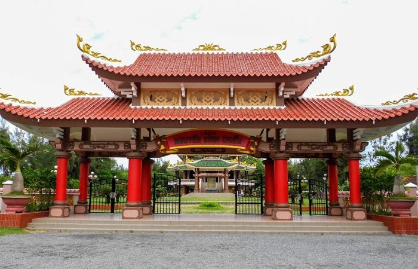
Là một đại thi hào nổi tiếng của nước ta, người có công lao to lớn trong chiến dịch phòng chống giặc ngoại xâm, ông đã dùng ngòi bút sắc xảo điêu luyện của mình để kiêu gọi toàn dân đứng lên kháng chiến. Lăng mộ ông được xây dựng tại xã An Đức, huyện Ba Tri, tỉnh Bến Tre.
Lăng mộ ông được xây dựng khá hoành tráng, để tỏ lòng tôn kính của người dân với người thầy thuốc đáng kính, nhà thơ yêu nước của dân tộc. Vào ngày 1/7 hàng năm sẽ diễn ra lễ hội truyền thống, nhằm tưởng nhớn đến công lao của cụ Nguyễn Đình Chiểu. Lăng mộ cụ được xếp hạng khu di tích quốc gia. Thời điểm này tại khu vực lăng mộ có diễn ra những lễ hội đặc sắc như hội thi mâm cơm, thi đấu cờ tướng, kéo co, nhảy bao bố, hoá trang lục Vân Tiên… có dịp bạn hãy trải nghiệm nhé.
4. Làng Du kích Đồng Khởi.
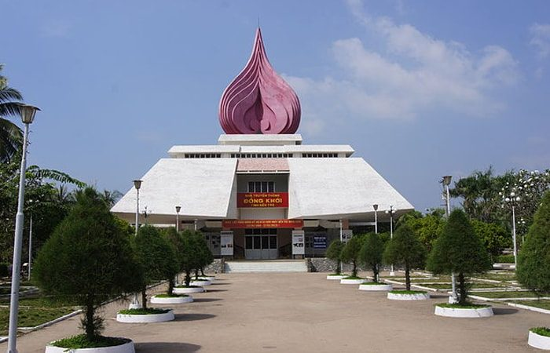
Là một ngôi làng nổi tiếng trong phong trào phòng chống giặc Pháp xâm lượt, nằm tại xã Định Thuỷ, huyện Mỏ Cày, tỉnh Bến Tre, cách trung tâm tp Bến Tre 15km. Nơi đây còn lưu giữ những chiến tích của cuộc đấu tranh nổi dậy của người dân ta vào năm 1960.
Để tiện việc tìm hiểu về phong trào Đồng Khởi, cái nôi của phong trào cách mạng, bạn có thể thuê khách sạn Mỏ Cày để nghỉ ngơi và tham quan làng Đồng Khởi, tìm hiểu tinh thần đấu trang của nhân dân trong trong cuộc kháng chiến.
5. Làng hoa cảnh chợ Lách
Là địa điểm tập trung nhiều loại chậu hoa cảnh, bonsai đẹp, được các nghệ nhân chăm sóc tỉ mỉ để phục vụ cho du khách trong những dịp lễ, tết. Mỗi độ xuân về làng hoa chợ lách lại đón một lượng lớn du khách đến thăm quan, chụp hình mua những đoá hoa rực rỡ, khoe sắc để trưng trong nhà.
Chợ Lách có nhiều loại hoa để bạn có thể lựa chọn, nhiều nghệ nhân nổi tiếng, luôn sẵn sàn phục vụ việc tạo hình uống cây cảnh theo yêu cầu của khách du lịch Bến Tre, bạn sẽ thấy bất ngờ về tay nghề của những bậc thầy về cây kiểng nơi đây.
6. Vườn Trái Cây Cái Mơn.
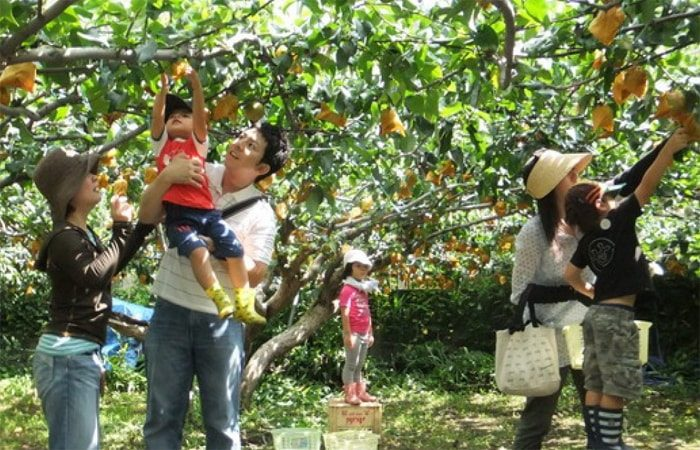
Là một khu vườn đậm chất Nam bộ, nằm tại xã Vĩnh Thành, huyện Chợ Lách, tỉnh Bến Tre. Với rặng cây xanh nặng trĩu quả, ngọt, ngon. Tên cái Mơn theo tiếng Khơ Me có nghĩa là mật ong. Sở dĩ có tên này vì khi xưa nơi đây trồng nhiều cây quả ngọt, hoa tươi đã thu hút lượng lớn ong mật đến.
Trong hành trình đến với vườn cây Cái Mơn du khách sẽ được thưởng thức những quả ngon, ngọt như chôm chôm, sầu riêng, bưởi quýt,…tại vườn, được chụp cùng với người thân những bức ảnh đẹp lưu giữ lại những khoảnh khắc tươi vui.
7. Chùa Tuyên Linh.
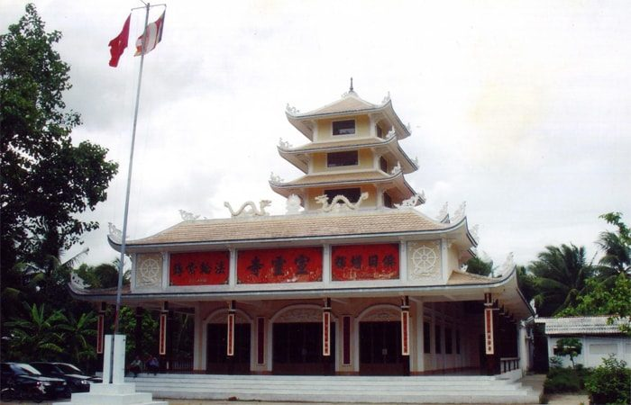
Là một ngôi chùa với kiến trúc đặc sắc, thích hợp cho những du khách muốn tìm hiểu về lịch sử phật giáo nước Việt Nam, với những chủ đề về sự hình thành của các vị đức phật thích ca A Di Đà, phật Dược Sư, bồ tát Di Lạc. Đến với chùa Tuyên Linh, bạn sẽ được chiêm ngưỡng bức tượng đức hộ pháp bằng đồng cao 0.7m.
Chùa Tuyên Linh nổi tiếng một phần đây là nơi mà cụ Nguyễn Sinh Sắc thân phụ của bác Hồ trú ngụ từ năm 1927 – 1929 để mở lớp dạy học và khám bệnh cho người dân địa phương. Đồng thời ngôi chùa từng là nơi che giấu cán bộ hoạt động cách mạng.
8. Sân chim Vàm Hồ.
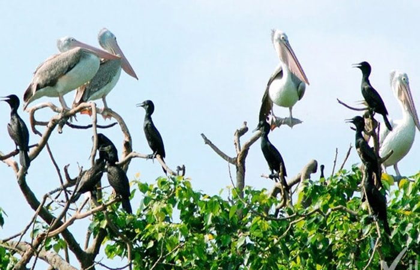
Là một địa danh du lịch sinh thái thu hút, nằm tại 2 xã Mỹ Hoà và Tân Xuân, huyện Ba Tri. Đến với sân chim Vàm Hồ, du khách sẽ được tận mắt trông thấy 84 loài chim trú ngụ, cạnh đó là khá nhiều cây lạ, có hình thù độc đáo sinh sống trên vùng nước ngậm mặn.
Sân chim Vàm Hồ được phân thành nhiều tầng khác nhau, tầng cao là dừa nước, đước, có nhiều loài chim về trú ngụ làm tổ. Dưới thấp là lau, sậy, cóc kèn..
Từ năm 1986 đàn chim lớn bay về Vàm Hồ sinh sống. Tại đây bạn không những được chiêm ngưỡng các loài cánh cò, vạc, mà còn được trông thấy các loài chim hoang bay thành từng đàn, lắng nghe tiếng cuốc gọi bầy, du khách sẽ được thư thả đi dạo trên những rừng cây, ngã lưng trên chiếc võng đung đưa dưới tán lá rừng, được hít thở bầu không khí trong lành trên dòng sông Ba Lai.
9. Khu Du Lịch Làng Bè.
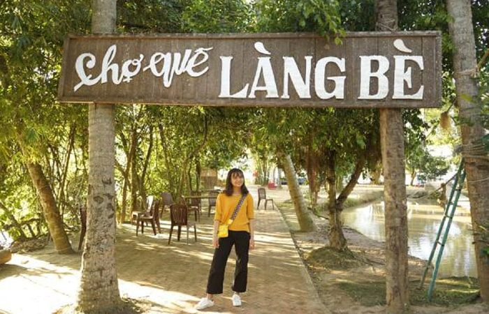
Là một khu du lịch thu hút, nằm tại số 81B/6B xã An Khánh, huyện Châu Thành, tại đây bạn có thể ghé qua cầu Rạch Miễu cách đó tầm 100m, tham gia nhiều hoạt động vui chơi thú vị.
Với đặc thù của sông nước, bà con địa phương tận dụng không gian để nuôi thả cá bè, du khách đến đây có thể có những chuyến thăm quan để đời, hành trình khám phá đời sống thường ngày, tham gia các trò chơi như đu dây tàu dừa, đi xe đạp thăng bằng, tát mương bắt cá…vô cùng thú vị đấy.
10. Nhà thờ La Mã
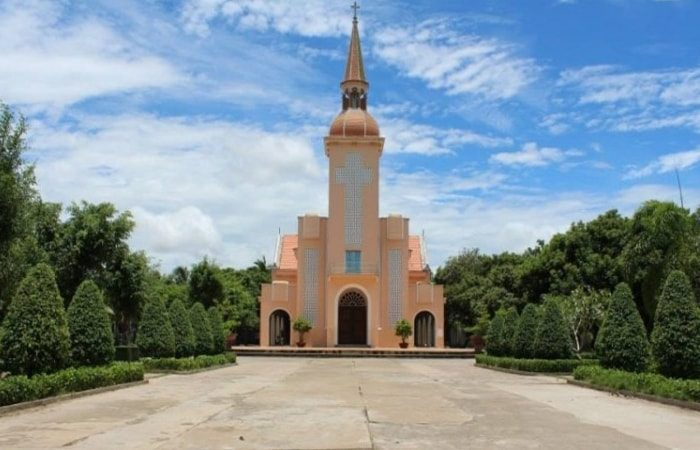
Là một công trình kiến trúc đặc đáo thu hút nhiều du khách thăm quan. Nằm tại Hưng Nhượng, Giồng Trôm, tỉnh Bến Tre. Nơi đây có cảnh sắc thiên nhiên đặc sắc, bình dị, gắn liền với giai thoại của đức Mẹ, nên là một chốn linh thiêng, kỳ bí rất đáng để bạn có thể bỏ thời gian ghé thăm quan.
11. Chùa Vạn Phước.
Là một ngôi chùa có vẻ đẹp lộng lẫy, uy nghi, nằm tại khu vực có vị trí hiểm trở, được bao quanh bởi những rừng cây ngập mặn. Nhìn từ xa ngôi chùa trở nên lung linh toả sáng như một hòn ngọc thu hút nhiều khách lữ hành đến hành hương.
Chùa Vạn Phước với kiến trúc hài hoà, cổng Tam Quan bề thế, với cặp rồng vàng được đặt tại khuôn viên diện tích 8ha đầy uy nghi lộng lẫy. Ngoài ra chùa còn là nơi trú ngụ của nhiều người có gia cảnh khó khăn. Vào những dịp lễ, tết, chùa Vạn phước có một lượng lớn du khách đến hành hương, tìm về cảm giác thanh tịnh chốn cửa phật.
V. Những Đặc Sản Bến Tre Hấp Dẫn Du Khách.
Trong quá trình đi du lịch Bến Tre, được thưởng thức những món ăn ngon hấp dẫn là điều mà nhiều du khách mong muốn. Xứ Dừa Bến Tre nổi tiếng với nhiều món ăn khác nhau. Dưới đây là những món ăn ngon bạn nên thưởng thức.
1. Cơm Dừa Bến Tre.
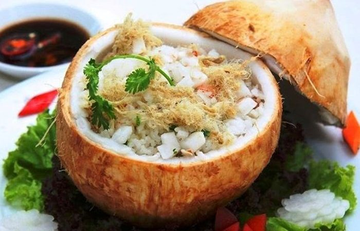
Là một món ăn ngon, các nấu rất cầu kỳ và hiếm nhà hàng tại Bến Tre có thể thực hiện. Để có thể hoàn thành món cơm dừa, đầu bếp phải mất nhiều thời gian canh nước dừa và gạo phải đều nhau. Nếu chênh lệch thì gạo sẽ bị nhão, khó ăn.
Nhưng khi đã thành phẩm thì món cơm dừa trở nên rất ngon, đặt biệt là khi ăn nóng, bạn không nên để lâu vì lúc này hạt cơm sẽ chuyển sang màu vàng nhạt, mất hương vị.
2. Chuối Đập.
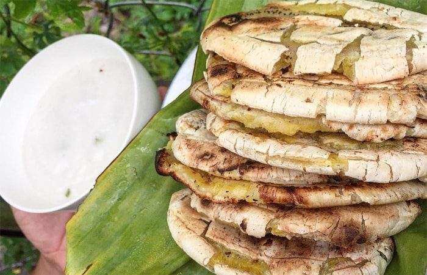
Là một món ăn dân dã nhưng được nhiều du khách yêu thích, nó mang một hương vị đặc trưng của xứ dừa. Để được ăn món chuối đập thì bạn có thể ghé các hàng quán ven đường, gánh hàng rong.
Với những công cụ đơn giản, một lò nướng, vài quả chuối, bạn có thể chế biến món chuối đập rồi đấy. Nguyên liệu làm món chuối Đập bến tre là chuối Xiêm, có vỏ màu đang chín chuyển sang màu vàng, hạn chế lấy quả chín quá thì khi nướng sẽ bị nhão và không ngon lắm. Món ăn sẽ tăng phần hấp dẫn khi bạn chấm với nước cốt dừa đặc quánh. Thời điểm thích hợp để thưởng thức là vào buổi xế chiều.
3. Bánh tráng Mỹ Lồng.
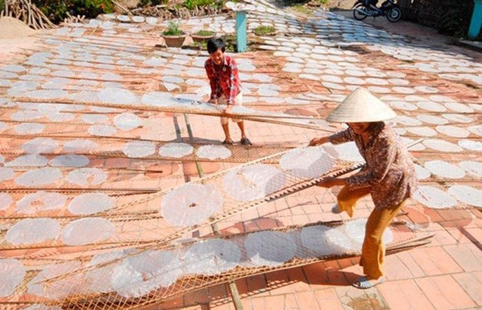
Là món bánh trứ danh nổi tiếng khắp Nam Bộ. Với nguyên liệu là những trái dừa xay nhỏ, lấy nước cốt làm nên bánh tráng siêu ngon, béo, khiến bạn thích ăn mãi thôi. Khi nướng bánh tráng trên lò than, hương thơm toả khắp thôi thúc khách đến thưởng thức.
Khi du lịch Sài Gòn và các tỉnh miền Nam bạn sẽ nghe nói nhiều đến bánh tráng Mỹ Lồng, một thương hiệu nổi tiếng này.
4. Bánh Phồng Sơn Đốc.
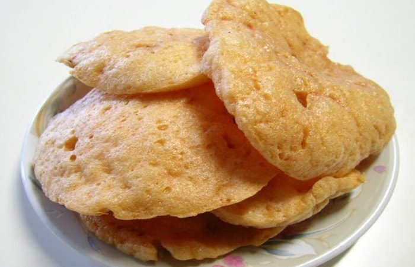
Là món ăn nổi danh và là niềm tự hào của người dân vùng Sơn Đốc, bánh có hương thơm gạo nếp, hoà quyện hương thơm dừa, khiến du khách đã thưởng thức 1 lần sẽ nhớ mãi. Khi nướng bánh thì người nướng phải chăm kỹ, nhanh tay để bánh không bị cháy và bánh vừa đủ chín sẽ ngon hơn.
Để được thưởng thức món bánh Phồng Sơn Đốc, bạn có thể ghé địa chỉ chợ Sơn Đốc tại xã Hưng Nhượng, huyện Giồng Trôm, tỉnh Bến Tre hoặc lò bánh út nhỏ của bà Đặn Thị Anh: ấp 2, xã Hưng Nhượng, huyện Giồng Trôm để mua.
6. Cháo Cua Đồng.

Là một món ăn đặc sản hấp dẫn của người dân tỉnh miệt vườn Bến Tre. Món Cháo Cua Đồng là đặc sản dân dã bạn nên thưởng thức khi có dịp du lịch Bến Tre.
Khi bà con địa phương bắt cua đồng về sẽ tác vỏ lấy gạch để nấu nước dùng rồi đun trong nồi đất để giữ nguyên hương vị hấp dẫn món ăn, phần cua sẽ được xay nhuyễn làm riêu cua. Để món cháo cua Đông Thêm phần hấp dẫn thì đầu bếp sẽ thêm một ít cá, thịt, nấm, trứng vịt lộn, tôm vào trong cháo.
Hiện trên truyến đường QL 60 có thể tìm thấy những món ăn cháo Cua Đồng hấp dẫn này.
Ngoài những địa điểm du lịch Bến Tre và những món ăn đặc sản hấp dẫn trên, Bến Tre còn nhiều điều kỳ thú đang chờ các bạn đến khám phá, hãy đồng hành cùng Du Lịch Việt nhé!